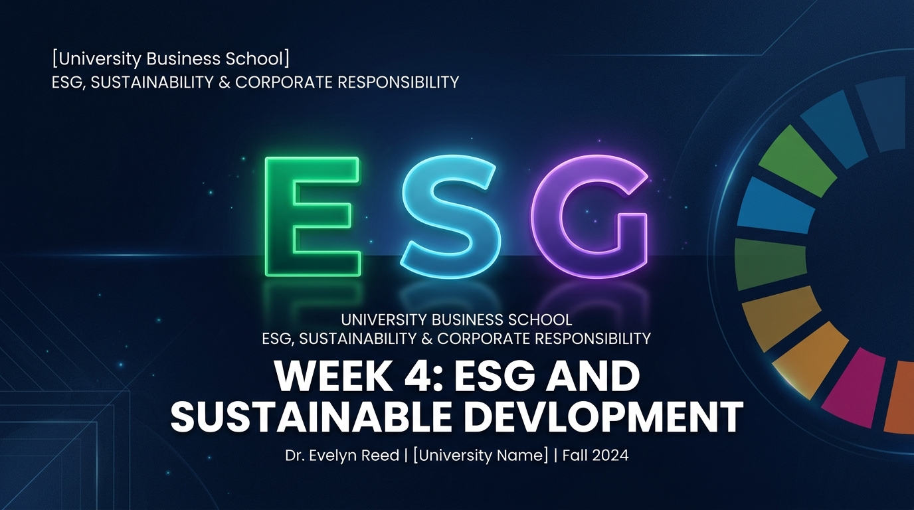

ESG 與永續發展：企業競爭力的新標準 ESG & Sustainable Development: New Standard
The New Standard for Business Competitiveness The New Standard for Business Competitiveness
從 CSR 邁向 ESG 永續治理、UN SDGs 國際評比與企業競爭力新典範 From CSR to ESG Governance, UN SDGs, Global Ratings, and Sustainable Competitiveness

課程進程回顧：建立企業永續完整防線 Course Journey: Building Sustainable Defense
W1 - W2
Business Ethics
(企業倫理內在基因)Business Ethics
(Internal Moral DNA)
W3
CSR & CSV
(責任行動與共享價值)CSR & CSV
(Social Responsibility Actions)
W4 Today
ESG Strategy
(永續治理與資本評比)ESG Strategy
(Governance & Ratings)
暖身問題：假設你是投資人，獲利相同你會選誰？ Warm-up: Which Company Would You Invest In?
高污染，但 EPS 極高Heavy Pollution, High EPS
短期獲利亮眼，但隨時面臨天價環保裁罰與氣候訴訟。High current EPS, facing high carbon fines & climate lawsuits.
EPS 稍低，但 ESG 全球前 10%Lower EPS, Global Top 10% ESG
永續治理扎實，獲全球主權基金與法人買進。Solid governance, favored by global sovereign funds.
驅動 ESG 爆發的 5 大核心力量 Why ESG Now? 5 Key Drivers
Climate
氣候變遷引發實體與轉型風險。Physical & transition risks from climate change.
Investors
貝萊德等基金強制納入 ESG 評比。BlackRock & institutional ESG mandates.
Consumers
Z 世代消費者偏好永續品牌。Gen Z preference for sustainable brands.
Governments
歐盟 CBAM 碳關稅與法規揭露。EU CBAM carbon border tax & disclosure.
Employees
頂尖人才選擇具價值使命的雇主。Top talent choosing purpose-driven firms.
CSR vs. ESG 根本差異比較表 CSR vs. ESG Comparison Matrix
| 比較面向Dimension | CSR (Corporate Social Responsibility) | ESG (Environmental, Social, Governance) |
|---|---|---|
| 主要驅動力Primary Driver | 企業自願 / 社會期望與公關需求Voluntary / PR & Social Expectation | 投資人強制需求 / 資本市場評比Investor Mandate / Capital Ratings |
| 管理目標Management Goal | 公益贊助 / 形象建立 / 善後補償Philanthropy / Image / Compensation | 風險管理 / 永續治理 / 核心競爭力Risk Management / Competitiveness |
| 評量方式Evaluation | 定性敘述 (永續報告書文字故事)Qualitative Narratives & Stories | 定量數據 (ESG 數據指標與評級)Quantitative Metrics & Ratings |
什麼是 ESG？三大構面解析 What is ESG? The Three Pillars
Environment (E)
環境構面：碳排放、能源效率、廢棄物、水資源與生物多樣性。Carbon emissions, energy, waste, water & biodiversity.
Social (S)
社會構面：人權、勞工安全、DEI 多元包容、社區關係與顧客保護。Human rights, labor safety, DEI, community & customer safety.
Governance (G)
治理構面：董事會獨立性、資訊揭露、內控反貪腐與高階薪酬。Board independence, disclosure, audit & executive pay.
Environment (E) 5 大核心指標 5 Core Environmental Metrics
1. Carbon
溫室氣體盤查範疇 1,2,3Scope 1, 2, 3 carbon footprint
2. Energy
再生能源綠電比率 (RE100)Renewable energy ratio (RE100)
3. Waste
廢棄物回收與循環經濟Recycling & circular economy
4. Water
水資源回收率與節水技術Water recycling & reduction
5. Nature
生物多樣性與自然防護Biodiversity & ecosystem protection
Apple 2030 全價值鏈碳中和 Apple 2030 Carbon Neutral Target
要求全球供應鏈 100% 轉用綠電Mandating 100% Clean Energy for Suppliers
Apple 承諾在 2030 年前實現所有產品從原料採購、製造、運輸到回收全生命週期淨零排放，強制要求台積電、鴻海等全球供應商全面轉用綠電！ Apple commits to net-zero across its entire supply chain and product lifecycle by 2030, forcing key suppliers like TSMC and Foxconn to adopt renewable energy.
Social (S) 5 大核心指標 5 Core Social Metrics
1. Rights
人權保障與禁止強制勞動Human rights & anti-forced labor
2. Safety
職業安全與健康零災害Occupational health & zero accidents
3. DEI
多元、平等與包容文化Diversity, Equity & Inclusion
4. Community
在地社區共榮與溝通Community engagement
5. Privacy
消費者權益與資安保護Customer protection & data privacy
Nike 供應鏈童工風暴與改造 Nike Supply Chain Transparency Overhaul
從醜聞危機到透明人權稽核典範From Crisis to Transparency Benchmark
1990s 遭曝光海外代工廠童工與血汗工廠，引發全球抵制。Nike 隨後建立獨立稽核制度與 100% 供應廠地圖透明公開，成為 S 構面轉型標竿。 After 1990s sweatshop boycotts, Nike overhauled its supply chain by publishing interactive factory maps and enforcing independent labor audits.
Governance (G) 5 大核心指標 5 Core Governance Metrics
1. Board
董事會獨立性與多元化Board independence & diversity
2. Disclosure
財報與 ESG 資訊透明度Financial & ESG transparency
3. Audit
內部控制與吹哨者制度Internal controls & whistleblower policy
4. Ethics
反貪腐與誠信經營條例Anti-corruption & code of ethics
5. Pay
高階主管薪酬連結 ESGExecutive pay tied to ESG KPIs
Toyota 品質認證治理危機 Toyota Quality Certification Governance
公司治理是企業永續的真正靈魂Governance is the Soul of Sustainability
測試認證數據造假疑雲顯示：缺乏獨立有效董事會監督與風控機制，再強大商品也會遭受毀滅打擊。G 治理是一切 E 與 S 的底座！ Data fraud scandals prove that without independent board oversight and risk controls, even giant automakers suffer severe blows. G is the foundation.
ESG 不是三件事，而是一套管理系統 ESG is a Holistic Management System
Governance (G)
治理靈魂與風控核心Governance Engine & Controls
Environment (E)
環境減碳與資源轉型Environmental Decarbonization
Social (S)
人權安全與社區共榮Social Rights & Safety
ESG Sorting Challenge ESG Sorting Challenge
將下列 8 項企業行為分類至 E、S 或 GSort 8 Scenario Cards into E, S, or G
1. 董事會女性比例提升 (Board Gender)1. Increasing female board seats
2. 員工安衛訓練 (Safety Training)2. Employee safety training
3. 使用綠電再生能源 (RE100)3. Adopting RE100 green power
4. 建立吹哨者管道 (Whistleblower)4. Establishing whistleblower channel
答案公布與邊界討論 Activity 1: Answers & Border Discussions
教師觀點帶出 (Key Takeaway)：Faculty Debrief:
「董事會女性比例屬於 G（董事會結構多元化）；個資保護兼具 S（顧客權益）與 G（資安風控）。ESG 三者高度相扣！」 "Board gender ratio belongs to G; data privacy links S (user rights) and G (cybersecurity risk control). ESG pillars are interconnected."
聯合國 17 項永續發展目標 (UN SDGs) UN 17 Sustainable Development Goals
SDG 7
可負擔的清潔能源Affordable & Clean Energy
SDG 8
良好工作與經濟成長Decent Work & Economic Growth
SDG 9
產業創新與基礎建設Industry, Innovation & Infrastructure
企業最常對應的 5 大 SDGs 目標 Top 5 Corporate Priority SDGs
SDG 7
清潔能源採購Clean Energy
SDG 8
體面工作與人權Decent Work
SDG 9
綠色創新技術Green Innovation
SDG 12
責任生產與消費Responsible Production
SDG 13
氣候行動與減碳Climate Action
台灣標竿企業 SDGs 實踐 Taiwan Enterprise SDGs Benchmarks
SDG 7 & 13
全球首家加入 RE100 的半導體廠商，帶動供應鏈減碳。First semiconductor giant in RE100 driving supply chain decarbonization.
SDG 8 & 13
推動零碳綠色金融、永續連結貸款與 ESG 審查。Pioneering zero-carbon green finance and sustainability-linked loans.
SDG 9
推動偏鄉 5G 建設與數位包容平權。Expanding rural 5G coverage and digital inclusion equity.
全球主要 ESG 揭露準則 (GRI, SASB, TCFD, ISSB) Global ESG Disclosure Frameworks
GRI
多重利害關係人全面揭露Multi-stakeholder general reporting
SASB
特定產業財務重大性指標Industry-specific financial materiality
TCFD
氣候財務風險與機會揭露Climate-related financial risk
ISSB
國際永續準則理事會整合標準International sustainability baseline
CDP
碳與水資源問卷評級Global carbon disclosure rating
MSCI ESG 評級分級系統 MSCI ESG Rating Scale (AAA to CCC)

從 AAA (領先者) 到 CCC (落後者)From AAA Leaders to CCC Laggards
全球大型機構法人（如國泰人壽、黑石）據此決定持股買進或剔除退場！ Global institutional investors allocate or divest capital based directly on these rating tiers.
ESG 評級如何直接影響企業融資與股價 How ESG Ratings Impact Capital & Valuation
1. 外資持股意願Institutional Holdings
高評級企業優先獲納入 ESG 永續 ETF 與國際基金權重。High-rated firms are included in global ESG ETFs and sovereign funds.
2. 銀行貸款利率Bank Loan Rates
永續連結貸款 (SLL) 依 ESG 表現給予融資利率調降優惠。Sustainability-linked loans offer lower interest rates for high ESG scores.
3. 降低資本成本Cost of Capital
顯著降低氣候訴訟與監管裁罰的違約風險 premium。Significantly lowers default risk premiums and cost of capital.
辨識 ESG Washing 漂洗風險 Identifying ESG Washing Risks
Greenwashing
誇大減碳與環保商品效益。Exaggerating environmental benefits.
Social Washing
標榜 DEI 但內部歧視低薪氾濫。Marketing DEI while labor abuse continues.
Governance Washing
宣稱獨立董事實則家族操控。Claiming independent board controlled by family.
ESG Company Diagnosis ESG Company Diagnosis
小組抽籤診斷任務：分析下列標竿企業Audit One Selected Target Firm
1. 台積電 (TSMC)
2. Apple
3. Tesla
4. Uniqlo / Google
各組 3 分鐘 Pitch 與 CEO 3 年計畫 Team Pitches & CEO 3-Year Action Plan
教師點評：產業屬性與 ESG 優先順序Industry Attributes & ESG Priorities
半導體/製造業優先聚焦 E（水電資源）與 S（供應鏈安衛）；金融/科技業則聚焦 G（資安內控與誠信）。ESG 策略必須因地制宜。 Semiconductor/manufacturing prioritizes E (water/power) and S (labor safety); finance/tech prioritizes G (cybersecurity & ethics).
Week 4 核心重點總結 Week 4 Summary & Key Takeaways
ESG 是競爭力硬實力1. ESG is Core Competitiveness
ESG 並非自願慈善，而是資本市場評估風險與企業價值的工具。ESG is not voluntary charity, but a key valuation and risk metric.
G 是永續治理靈魂2. G is the Soul
公司治理 (G) 決定 E 與 S 的執行成效，防範氣候與誠信浩劫。Governance (G) drives the success of Environmental & Social goals.
SDGs & Ratings 對接3. SDGs & Rating Alignment
對接 UN SDGs 並引用 GRI、SASB、TCFD 國際報導標準。Aligning with UN SDGs and reporting via GRI, SASB, TCFD standards.
報告書解讀實戰力4. Report Literacy
具備閱讀上市公司永續報告書並防範 ESG Washing 的能力。Building professional capacity to audit reports and spot washing.
W5 課程預告與 Homework 4 Week 5 Preview & Homework 4
W5 預告：氣候變遷、碳中和與淨零排放W5 Preview: Climate Change & Net Zero
下一週我們將深入探討 E 構面最前沿：碳邊境調整機制 (CBAM)、碳權交易與 Net Zero 轉型策略！Next week we deep-dive into E: Carbon Border Tax (CBAM), Carbon Credits, and Net Zero strategies!
Homework 4：上市公司永續報告書初探 (1,500-2,000字)Homework 4: Sustainability Report Audit (1,500-2,000w)
下載一家上市公司最新永續報告書，分析 E/S/G 措施、對應 SDGs、國際準則 (GRI/SASB/TCFD) 引用與改進建議。 Audit a listed firm's report: E/S/G actions, SDGs alignment, GRI/SASB/TCFD standards, and recommendations.